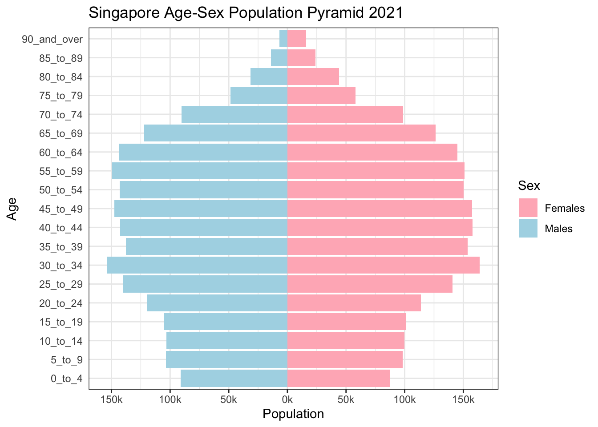

pacman::p_load(tidyverse, patchwork,
ggthemes, hrbrthemes,
ggrepel)Take Home Exercise 2
In this take-home exercise, we will look at one of classmates population pyramid chart and evaluate it in terms of clarity and aesthetics. We will also re-make the original chart design by using ggplot2, ggplot2 extensions and tidyverse packages.
1. R Preparation
Install and launching R packages
The code chunk below uses p_load() of pacman package to check if tidyverse packages are installed. If they are, they will be launched into R.
Importing the data
The code chunk below uses read_csv function to import the dataset: Singapore Residents by Planning Area / Subzone, Age Group, Sex and Type of Dwelling, June 2022, into R and name it ppltn_data for future reference.
ppltn_data <- read_csv("data/respopagesextod2022.csv")Rows: 100928 Columns: 7
── Column specification ────────────────────────────────────────────────────────
Delimiter: ","
chr (5): PA, SZ, AG, Sex, TOD
dbl (2): Pop, Time
ℹ Use `spec()` to retrieve the full column specification for this data.
ℹ Specify the column types or set `show_col_types = FALSE` to quiet this message.head(ppltn_data)# A tibble: 6 × 7
PA SZ AG Sex TOD Pop Time
<chr> <chr> <chr> <chr> <chr> <dbl> <dbl>
1 Ang Mo Kio Ang Mo Kio Town Centre 0_to_4 Males HDB 1- and 2-Room … 0 2022
2 Ang Mo Kio Ang Mo Kio Town Centre 0_to_4 Males HDB 3-Room Flats 10 2022
3 Ang Mo Kio Ang Mo Kio Town Centre 0_to_4 Males HDB 4-Room Flats 10 2022
4 Ang Mo Kio Ang Mo Kio Town Centre 0_to_4 Males HDB 5-Room and Exe… 30 2022
5 Ang Mo Kio Ang Mo Kio Town Centre 0_to_4 Males HUDC Flats (exclud… 0 2022
6 Ang Mo Kio Ang Mo Kio Town Centre 0_to_4 Males Condominiums and O… 50 20222. Critique
The original design is shown as below:

This is a population pyramid trellis chart whereby demographic patterns of 9 selected planning areas in Singapore is well organised into a 3*3 sub-chart format that share the same scale and axis for easy comparison. Male and female population are shown in different color tones, and the age groups are also arranged in descending order for easy visualization
The selected graph includes proper axes and labels; grid lines are included for easy data visualization; A caption in the bottom right corner suggests the source reference; Each planning area is properly labelled in bold in each sub-chart.
However, this chart can be further improved in terms of clarity and aesthetics. The below is the improvement suggestions.
2.1 Clarity
a) Dashboard Title
For easy understanding of the graph, title should serve as a clear summary of the graph. The current dashboard title –“Different demographic patterns are revealed when Singapore population pyramids are grouped by planning areas”, is more like a factual description rather than a summary of the graph presented.
b) Graph Title
As graph title is under the dashboard title, it is unclear to audience in terms of which one to pay attention to. We can combine the dashboard and graph title as there is only one trellis chart in the dashboard.
c) Data Label
In the original chart, only 2 or 3 sets of data are labelled in each population pyramid graph. It is unclear to audience why these sets of data are labelled or emphasized. We can label all data or only label the minimum and maximum set for more distinct comparison.
2.2 Aesthetics
a) Color Intensity Tone
As population pyramid has shown the population absolute number in terms of vertical bar length, color intensity is not necessary to show population. Hence we can remove the color intensity to make the graph look cleaner.
b) Axes Label
The Y axis label –age group, has been split into 19 categories in total (0 to 4 till 90 and over). It is visually too dense to see clearly. We can further combine the age group into range of 10 years to reduce the number of age groups and make the graph look cleaner.
c) Title
It is more visually pleasant to make graph title center aligned instead of left aligned.
3. Proposed Chart
3.1 Sketch of Proposed Design
3.2 Data Wrangling
Firstly we will compute Singapore population by planning areas, gender and age using group_by() function.
population <- ppltn_data %>%
group_by(`AG`, `PA`,`Sex`) %>%
summarise('Count'= sum(`Pop`)) %>%
ungroup()`summarise()` has grouped output by 'AG', 'PA'. You can override using the
`.groups` argument.head(population)# A tibble: 6 × 4
AG PA Sex Count
<chr> <chr> <chr> <dbl>
1 0_to_4 Ang Mo Kio Females 2480
2 0_to_4 Ang Mo Kio Males 2530
3 0_to_4 Bedok Females 4970
4 0_to_4 Bedok Males 5090
5 0_to_4 Bishan Females 1320
6 0_to_4 Bishan Males 1400Secondly, we sort the data based on age group and in ascending order by using mutate() and arrange() function.
order <- c("0_to_4", "5_to_9", "10_to_14", "15_to_19", "20_to_24", "25_to_29", "30_to_34", "35_to_39", "40_to_44", "45_to_49", "50_to_54", "55_to_59", "60_to_64", "65_to_69", "70_to_74", "75_to_79", "80_to_84", "85_to_89", "90_and_over")
sorted_population <- population %>%
mutate(AG = factor(AG, levels = order)) %>%
arrange(AG)3.3 Final Design
We are going to plot a single population pyramid of one planning area first using ggplot() function.
p <- ggplot(sorted_population, aes(x = ifelse(Sex == "Males", yes = -Count, no = Count),
y = AG, fill = Sex)) +
geom_col() +
scale_x_continuous(breaks = seq(-150000, 150000, 50000),
labels = paste0(as.character(c(seq(150, 0, -50), seq(50, 150, 50))),"k")) +
labs (x = "Population", y = "Age", title='Singapore Age-Sex Population Pyramid 2021') +
theme_bw() +
theme(axis.ticks.y = element_blank()) +
scale_fill_manual(values = c("Males" = "lightblue", "Females" = "lightpink"))
p
4. Conclusion
Take Home Exercise 2 helps me to understand more about the significance of clarity and aesthetics of graphs in terms of enlighten readers in visualization. By evaluating peer’s graph and re-making it with ggplot2 packages in R, I have gained better insights in data visualization and R knowledge.
The above concludes my Take Home Exercise 2. Thank you for reading!